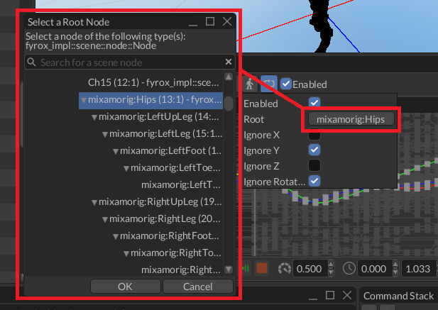

Root Motion
Root motion is a special technique that transfers motion from some node in a hierarchy to a physical capsule, which is then used to perform the actual motion. In action it looks like this:
As you can see in the first part of the video, the movement of the character looks more like floating above the ground. This happens because the actual movement of the physical capsule is not synchronized with the movement of the character. Root motion fixes exactly this issue by taking the motion of some root node of the animated hierarchy (hips in case of this character) and transferring it to the physical capsule. This makes the actual movement to be fully synchronized with the movement "baked" in the animation.
Root motion also have some nice effect - you can move your character solely by the movement from animation, and it will work perfectly in 99% of cases. Animations can also contain some rotations which can also be extracted and applied to the physical capsule. The next awesome property is that your character will never stand out of its physical capsule, which will prevent phasing it into walls when playing animations with large movements.
In general, you should prefer root motion -driven movement for your characters whenever you can. Simply because it eliminates a lot of common problems with character movement. It can also be applied to 2D world and will work exactly the same.
How to enable
You can enable/disable/setup it in the drop-down menu that opens by clicking RM button in the animation editor.
Keep in mind, that root motion should be configured on per animation basis. Most of the animations does not
need the root motion at all.

The most important part here is the Root handle, it should be set to a root node that moves by your animation, usually
it is called like "hips" or similar:

After that, you need to apply filters for axes - most of the locomotion animations "works" in oXZ plane, so Y axis should be ignored. Also, if you don't have any turns in your animation, you can also filter out the rotation part.
Alternatively, you can do the same from code:
#![allow(unused)] fn main() { fn setup_root_motion( animation_player: Handle<Node>, animation: Handle<Animation>, root_node: Handle<Node>, ctx: &mut ScriptContext, ) { if let Some(animation_player) = ctx .scene .graph .try_get_mut_of_type::<AnimationPlayer>(animation_player) { if let Some(animation) = animation_player.animations_mut().try_get_mut(animation) { animation.set_root_motion_settings(Some(RootMotionSettings { node: root_node, ignore_x_movement: false, ignore_y_movement: true, ignore_z_movement: false, ignore_rotations: true, })) } } } }
This code does pretty much the same as the editor on the screenshots above. The arguments of this function are the following:
animation_player- a handle to the animation player in which all your animations are stored,animation- a handle of the animation in which you want to enable the root motion (you can obtain the handle by using AnimationContainer::find_by_name_ref method).root_node- a handle to a root node of your character's hierarchy, usually it is called something like "Hips" or "Pelvis".ctx- script context from your current script.
How to use
Direct root motion values extracted from animations are kind of useless by their own and in 99% of the cases you should get the average root motion values from a state machine that animates your character. This is because animation blending state machine properly blends the root motion from all active animation sources. In general, it could look something like this:
#![allow(unused)] fn main() { fn fetch_and_apply_root_motion( absm: Handle<Node>, rigid_body: Handle<Node>, character_model: Handle<Node>, ctx: &mut ScriptContext, ) { // Step 1. Fetch the velocity vector from the animation blending state machine. let transform = ctx.scene.graph[character_model].global_transform(); let mut velocity = Vector3::default(); if let Some(state_machine) = ctx .scene .graph .try_get(absm) .and_then(|node| node.component_ref::<AnimationBlendingStateMachine>()) { if let Some(root_motion) = state_machine.machine().pose().root_motion() { velocity = transform .transform_vector(&root_motion.delta_position) .scale(1.0 / ctx.dt); } } // Step 2. Apply the velocity to the rigid body and lock rotations. if let Some(body) = ctx.scene.graph.try_get_mut_of_type::<RigidBody>(rigid_body) { body.set_ang_vel(Default::default()); body.set_lin_vel(Vector3::new(velocity.x, body.lin_vel().y, velocity.z)); } } }
This code extracts the current local-space offset for the current frame and then transforms the offset to
world-space coordinates. Finally, it reduces the offset by the current delta time (1.0 / ctx.dt) to obtain the
new velocity vector which is then applied to the rigid body (player's capsule).
The arguments in this function are following:
absma handle to an instance of Animation Blending State Machine noderigid_bodya handle to the rigid body that is used by your charactermodel- a handle to the root node of your character's 3D model.
Raw root motion values
If for some reason you still need raw root motion values from animations, then you can extract them directly from the desired animation by using Animation::root_motion method.
Combining root motion with procedural motion
Sometimes there's a need to combine root motion with some procedural motion (for example - inertia after jumping). This could be done pretty easily by adding two velocity vectors - one from the root motion, and one from the procedural motion.